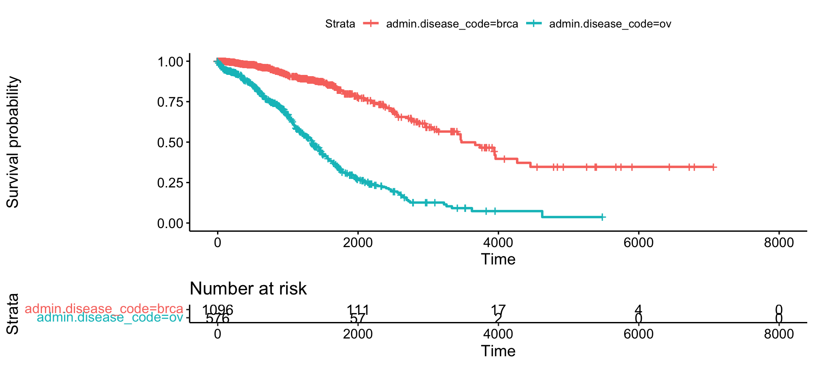
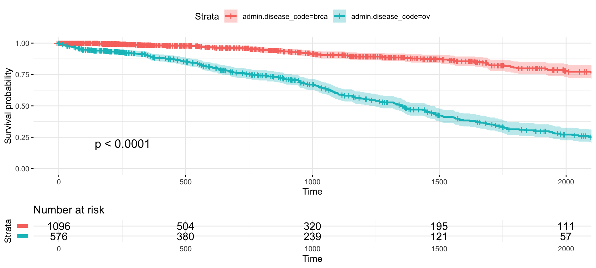

Survival plots have never been so informative
Marcin Kosinski
Source:vignettes/Informative_Survival_Plots.Rmd
Informative_Survival_Plots.Rmd
This vignette covers changes between versions 0.1.0 and 0.2.0.
Motivation
Hadley Wickham’s ggplot2 version 2.0 revolution, at the end of 2015, triggered many crashes in dependent R packages, that finally led to deletions of few packages from The Comprehensive R Archive Network. It occured that survMisc package was removed from CRAN on 27th of January 2016 and R world remained helpless in the struggle with the elegant visualizations of survival analysis. Then a new tool - survminer package, created by Alboukadel Kassambara - appeared on the R survival scene to fill the gap in visualizing the Kaplan-Meier estimates of survival curves in elegant grammar of graphics like way. This blog presents main features of core ggsurvplot() function from survminer package, which creates the most informative, elegant and flexible survival plots that I have seen!
During the development of RTCGA package (about which I wrote here) we encountered a need to provide the simplest possible interface to estimates of survival curves for biotechnologists and the discovery of ggsurvplot() was a bull’s-eye! Many have tried to provide a package or function for ggplot2-like plots that would present the basic tool of survival analysis: Kaplan-Meier estimates of survival curves, but none of earlier attempts have provided such a rich structure of features and flexibility as survminer. On basis of estimates of survival curves one can infere on differences in survival times between compared groups, so survival plots are very useful and can be seen in almost every publication in the field of survival analysis and time to event models.
Example
After regular installation
install.packages('survminer') BiocManager::install("RTCGA.clinical") # data for examples
we can create simple estimates of survival curves just after we put survfit (survival package) object into ggsurvplot() function. Let’s have a look at differences in survival times between patients suffering from Ovarian Cancer (Ovarian serous cystadenocarcinoma) and patients suffering from Breast Cancer (Breast invasive carcinoma), where data were collected by The Cancer Genome Atlas Project.
library(survminer) library(RTCGA.clinical) survivalTCGA(BRCA.clinical, OV.clinical, extract.cols = "admin.disease_code") -> BRCAOV.survInfo library(survival) fit <- survfit(Surv(times, patient.vital_status) ~ admin.disease_code, data = BRCAOV.survInfo) # Visualize with survminer ggsurvplot(fit, data = BRCAOV.survInfo, risk.table = TRUE)

This simple plot presents, in an elegant way, estimates of survival probability depending on days from cancer diagnostics grouped by cancer types and an informative risk set table, which shows the number of patients that were under observation in the specific period of time. Survival analysis is a specific field of data analysis because of the censored time to event data, so risk set size is a must in visual inference.
After few improvements (#1, #2, #3, #4, #7, #8, #12, #28), made by Alboukadel in version 0.2.0, one can create a powerful, informative survival plot with such specification of parameters
ggsurvplot( fit, # survfit object with calculated statistics. data = BRCAOV.survInfo, # data used to fit survival curves. risk.table = TRUE, # show risk table. pval = TRUE, # show p-value of log-rank test. conf.int = TRUE, # show confidence intervals for # point estimaes of survival curves. xlim = c(0,2000), # present narrower X axis, but not affect # survival estimates. break.time.by = 500, # break X axis in time intervals by 500. ggtheme = theme_minimal(), # customize plot and risk table with a theme. risk.table.y.text.col = T, # colour risk table text annotations. risk.table.y.text = FALSE # show bars instead of names in text annotations # in legend of risk table )

Each parameter is described in the correspoding comment, but I would like to emphasize the xlim parameter which controls limits of the X axis but does not affect the survival curves, that are taking into account all possible times. Another brilliant parameter is break.time.by that affects survival plots and the risk set table - this would not be so easy to create it by yourself. Also a ggtheme parameter is beneficial for simple plot customization. Finally, risk.table.y.text and risk.table.y.text.col (for which I have provided a user requests) are useful parameters that change text (often too long and redundand) from risk table legend into narrow, coloured bar. This saves a lot of space in the final plot.
Comparisons
Even though survMisc have returned on CRAN, I’ve appreciated survminer so much that I would not look anymore for other solutions. Check why: at the end I present survival curves that can be obtained with the usage of base package and survMisc package.
base package
plot(fit) # base

It looks pretty… base…
plot(fit, col=c("orange","purple"), lty=c(1:2), lwd=3, # base with some customization conf.int = TRUE, xmax = 2000) # add a legend legend(100, .2, c("Ovarian Cancer", "Breast Cancer"), lty = c(1:2), col=c("orange","purple"))

I haven’t seen examples with risk table and adding legend isn’t so quick as in survminer. Moreover, there are no minor axis breaks lines.
survMisc package
# install.packages('survMisc') library(survMisc) survMisc:::autoplot.survfit(fit) # no customization
Why colours are not asigned to any group? Where is the legend? Why there is so much white space to the right? (Those were questions for the version of survMisc where this was an issue.) Where is OX axis?
survMisc:::autoplot.survfit( # with some hard customization fit, type = "fill", pVal=TRUE ) -> fit.survMisc fit.survMisc$table <- fit.survMisc$table + theme_minimal() + # theme(legend.position = "top") coord_cartesian(xlim = c(0,2000)) fit.survMisc$plot <- fit.survMisc$plot + theme_minimal() + coord_cartesian(xlim = c(0,2000)) survMisc:::print.tableAndPlot(fit.survMisc)
Where is risk table? Why I can’t pass break.by.time to have informative minor X axis breaks? Why the plot gets narrower when the legend in risk table gets wider and why I can’t do anything to workaround this?
Never mind ->
install.packages('survminer')